Best AI Website Builders
3+ Best AI Website Builders: Professional Website Without Programming
My Top AI Website Builders –
👉 CodeDesign
👉 WebStudio
👉 Unicorn Platform
👉 Siter
Table of Contents
· Introduction: About Best AI Website Builders
· 1.Code Design
· 2.Web Studio
· 3.Unicorn Platform
· 4.Siter
Introduction: About Best AI Website Builders
Want to create your own customized website without getting bogged down in programming or even hiring a programmer or designer?
The solution is to use AI Website Builder tools.
AI website builders are tools that help you simplify the process of building and designing your own website in a short amount of time. They eliminate the need for coding and manual design.
In this article, we will present the best AI website builders you can use.
1. Code Design
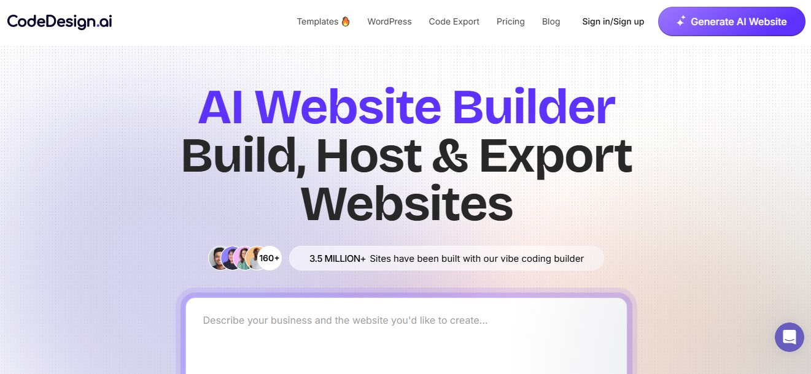
CodeDesign is an AI-assisted website builder that generates pages, layouts and copy from prompts and then lets you tweak the result in a visual editor.
Features
- AI site generation from a simple prompt (structure, text, and imagery produced automatically).
- Visual canvas editor to adjust layouts and content after generation.
- Template library and regeneration options so you can try different looks quickly.
- Hosting and deployment workflows built into the platform (export/publish options).
- Copywriting helpers that generate hero text, feature descriptions, and CTAs.
Pros
- Fast to go from idea to a working page; good for validating concepts.
- Low learning curve for non-designers: the AI handles layout and initial copy.
- Lets you iterate quickly — generate different versions until one sticks.
- Useful when you need a presentable page without hiring a designer.
Cons
- AI-generated design can feel generic unless you invest time customizing.
- Less control than hand-coding complex interactions or pixel-perfect visuals.
- Depending on your needs, reliance on the AI’s copy may require editing for tone or accuracy.
- Exported code or SEO nuances may not match a developer’s standards out of the box.
Templates
There are many templates and several types available.
You can create a website from scratch or modify one of the templates to suit your needs.
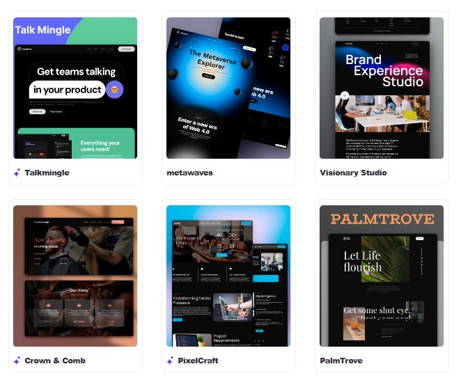
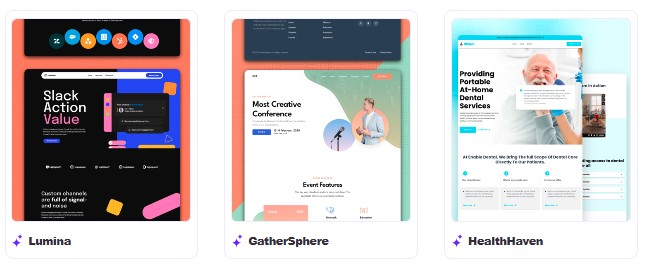
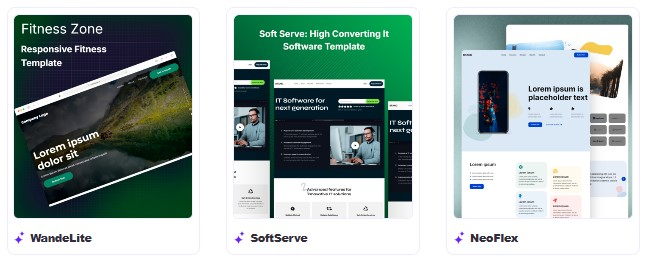
There are more templates available if you're interested.
👉 Try Here
Pricing
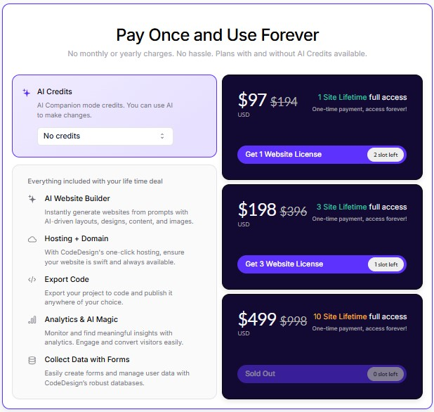
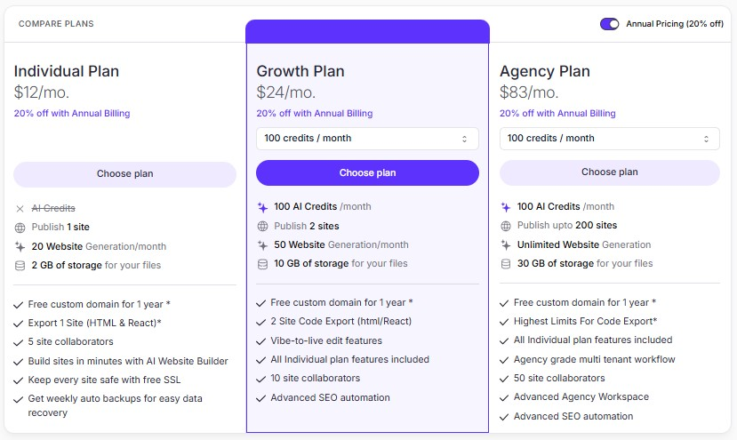
👉 Start Here
2. Web Studio
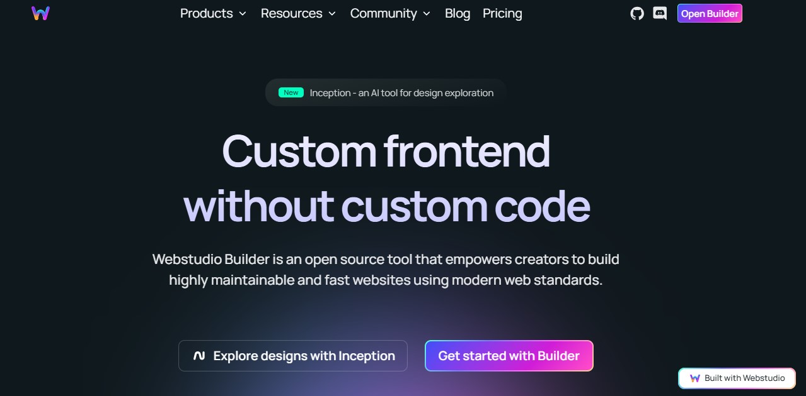
WebStudio is an open-source visual website builder that focuses on giving designers and developers a high degree of front-end control while still offering a visual editing surface. It emphasizes modern standards, performance, and maintainable output.
Features
- Visual editor that exposes real HTML/CSS constructs rather than hiding them behind proprietary abstractions.
- Component system and support for custom fonts (including variable fonts).
- Strong focus on performance, accessibility, and standards-compliant output.
- Open-source codebase and documentation for self-hosting or extending.
- Tools aimed at bridging design and production — useful for teams that hand off to developers.
Pros
- Cleaner hand-off to developers because the output leans on standard web tech.
- Good for people who want visual speed without sacrificing serious CSS control.
- Open-source nature means you can inspect, extend, or self-host.
- Often better for performance-minded projects than some heavier no-code platforms.
Cons
- Not as plug-and-play for absolute beginners compared with pure WYSIWYG drag-and-drop builders.
- Requires some familiarity with web concepts to unlock advanced capabilities.
- Ecosystem and integrations are less “baked-in” than huge commercial platforms.
- If you need very opinionated templates or marketing widgets, you may need to assemble them yourself.
Results
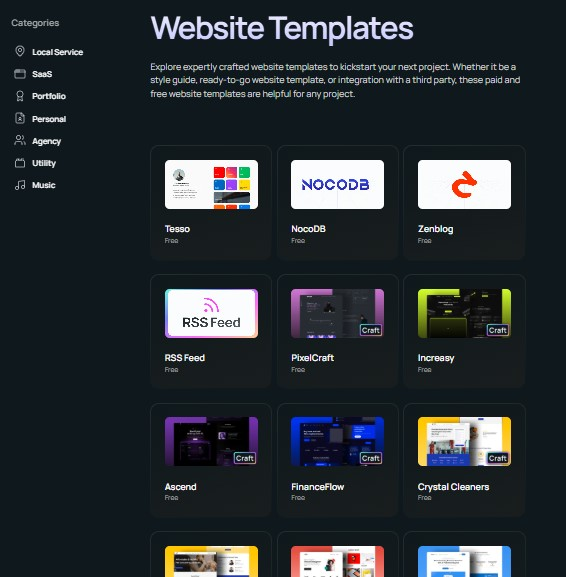
👉 Try Here
Pricing
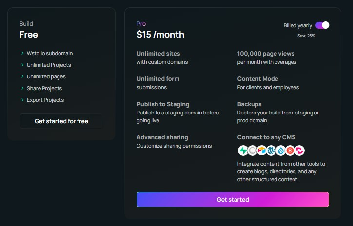
👉 Start Here
3. Unicorn Platform
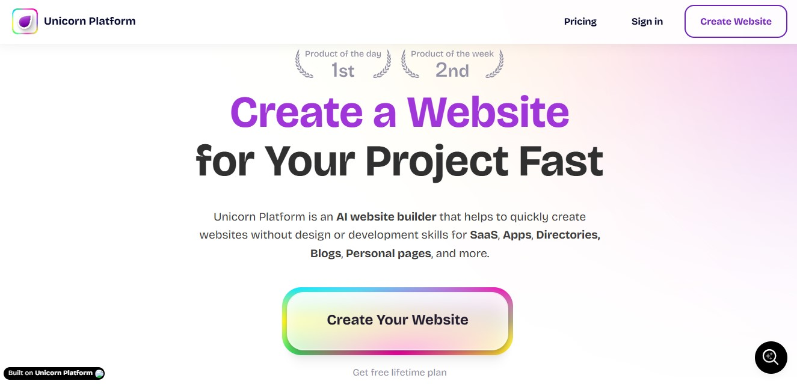
Unicorn Platform is a no-code landing-page and SaaS website builder aimed at startups and founders, with drag-and-drop building, templates, forms and some AI-assisted content tools. It’s built for quick landing pages, product pages and simple marketing sites.
Features
- Drag-and-drop editor with a large set of ready-made blocks and mobile-ready templates.
- Form and lead-collection tools, basic CMS/dynamic data for directories or listings.
- Built-in integrations for analytics, payments and third-party widgets.
- AI prompts/features to generate or tweak content and visuals.
- Multilanguage and nested page support for projects that need simple localization.
Pros
- Rapidly build polished landing pages without design experience.
- Templates and components reduce decision fatigue when you’re launching fast.
- Good fit for solo founders who need a clean web presence without engineering time.
- Helpful onboarding docs and a focused feature set (less noise).
Cons
- Template-driven approach can produce similar-looking sites unless you customize carefully.
- For complex SaaS sites or custom app-like pages, you’ll hit limits and might need to integrate external services.
- Pricing and some advanced features may tilt toward paid tiers for growing teams.
- Not a full CMS replacement if you need complex content workflows.
Pricing
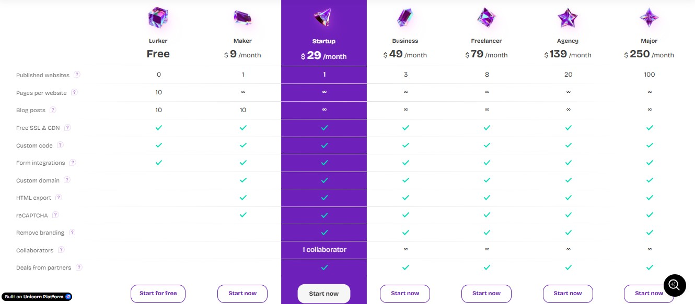
👉 Start Here
4. Siter
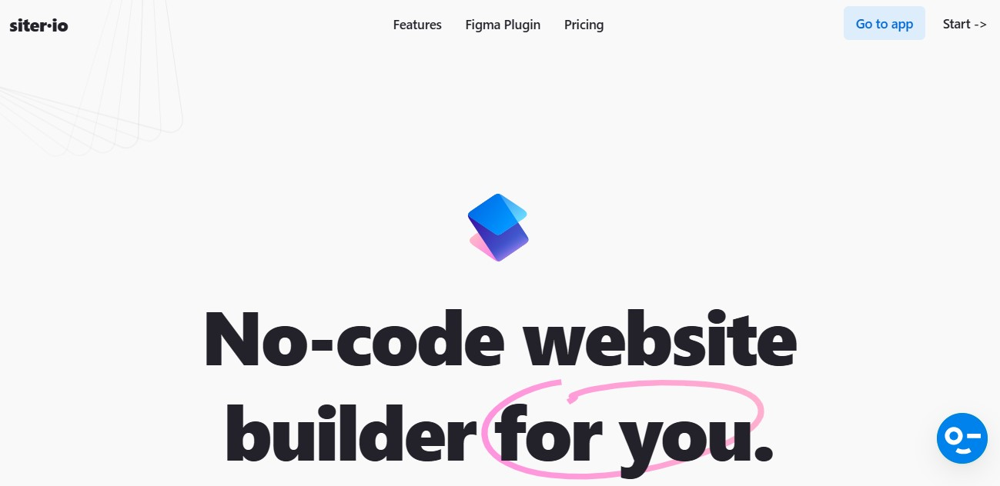
Siter is a no-code website builder with a freehand, design-first editor and Figma integration that lets you convert designs into live pages without coding. It targets users who prefer visual, freeform layout work and Figma-to-web workflows.
Features
- Freehand page editor that lets you place and style elements with visual precision.
- Figma plugin to export designs directly into the Siter editor.
- Responsive layout tools and a straightforward publishing flow.
- Built-in SEO basics, forms, and the ability to add raw HTML when needed.
- Desktop app options and a pricing tiering that includes free and low-cost plans.
Pros
- Very attractive for designers who already work in Figma and want a quick route to the live web.
- More creative control over layout than rigid block-based builders.
- Reasonable pricing for solo projects or small teams.
- Lets you drop into HTML when you need custom behavior.
Cons
- Fewer pre-built marketing widgets and integrations compared with larger builders.
- The learning curve is real if you expect “pixel-perfect” translation every time.
- Hosting details and advanced deployment options are less prominent than with enterprise builders.
- Template selection and scalability may be limited for large multisite projects.
Pricing
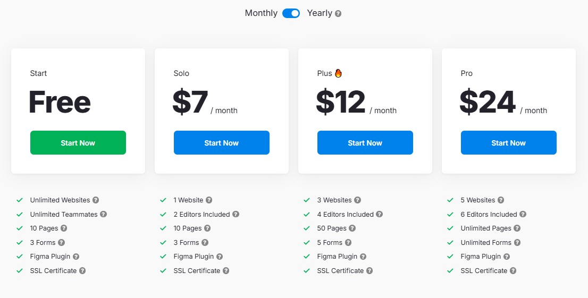
👉 Start Here